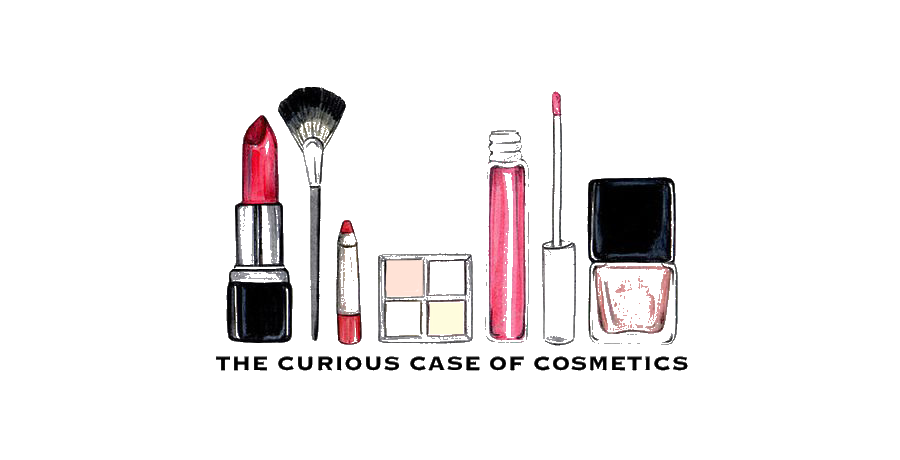

Get To Know Us!
With the deluge of beauty products in the market today, many are overwhelmed by the choices available. They often have no idea which product they should buy, and more often than not, they end up buying whatever insidious advertisements push them to. This leads to overconsumption of ill-suited beauty products, which will eventually be left to expire in a corner of their vanities. Also, many beauty products require consistent application for optimal results, but with their busy lives they forget steps in their beauty routines and may even end up skipping it entirely.
Furthermore, it is difficult to find people around them who use the same type of beauty products as them. This makes it challenging when they want to discuss specific beauty issues or discover the latest trending product.
We are here to help!
We hope to solve beauty enthusiasts’ woes through an integrated web application. Leveraging on the experience and knowledge gathered through crowdsourcing, the community of beauty product users can optimise their purchase and use of beauty products. Our web application also serves as a tool to organise users’ many beauty products and visualise their beauty routines. Moreover, we hope to provide a platform for like-minded users to connect.